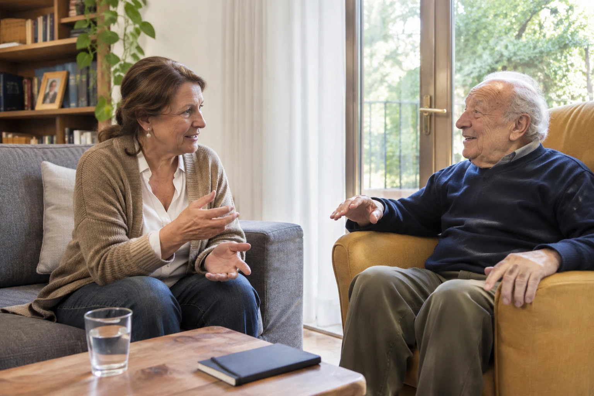

SCHEDA LOCALE · SOLO FRIULI VENEZIA GIULIA
Caregiver in Friuli Venezia Giulia: contributi e FAP
Il Fondo caregiver e il Fondo per l’autonomia possibile hanno regole diverse. Qui trovi a chi rivolgersi e cosa verificare prima di chiedere un contributo.

Per permessi, congedi e prestazioni nazionali, leggi la guida generale per assistere familiari anziani o con disabilità.
Fondo caregiver: requisiti e limiti
Il Fondo caregiver regionale prevede 300 euro al mese per un massimo di dodici mesi, all’interno di un progetto personalizzato. Caregiver e persona assistita devono essere residenti in regione e l’assistenza deve svolgersi a domicilio. La soglia indicata è ISEE del nucleo del caregiver non superiore a 30.000 euro. [15][16]
Si accede attraverso i servizi e i bandi degli Ambiti territoriali sociali, con graduatoria e nei limiti delle risorse. Sono previste priorità, in particolare per disabilità gravissima, e limitazioni per chi ha già beneficiato delle precedenti assegnazioni. Non è un rinnovo annuale automatico. L’annuncio regionale del 20 novembre 2026 conferma nuovi stanziamenti, ma non prova che il bando del proprio Ambito sia già aperto. [15][17]
In regione esiste anche il Fondo per l’autonomia possibile (FAP), con interventi distinti secondo il progetto assistenziale. Non confonderlo con il Fondo caregiver: accesso, importi, rendicontazione e compatibilità devono essere verificati separatamente. [18]
Come chiedere una valutazione
Rivolgiti al Servizio sociale dei Comuni o, dove presente, al Punto unico di accesso della persona assistita. Descrivi le attività di cura, gli orari scoperti e le prestazioni già ricevute. Chiedi se il bando dell’Ambito competente è aperto, quale ISEE serve e quali documenti presenta il caregiver.
La valutazione e il progetto personalizzato precedono l’eventuale riconoscimento economico. Il comunicato di finanziamento non sostituisce il bando né garantisce un posto in graduatoria. Per il FAP occorre verificare la specifica tipologia di intervento, le spese ammesse e la rendicontazione.
Fonti regionali
- Regione FVG — Contributi ai caregiver familiari. Requisiti, soglia ISEE, priorità, bandi e limitazioni.
- Portale disabilità FVG — Fondo caregiver. Destinatari e progetto personalizzato.
- Regione FVG — Comunicato del 20 novembre 2026 sui fondi caregiver. Stanziamento, distinto dall’apertura dei bandi locali.
- Regione FVG — Fondo per l’autonomia possibile. Tipologie di intervento e presa in carico.
Controllo editoriale delle fonti; nessuna revisione giuridica indipendente documentata. Non è stata verificata l’apertura di ciascun bando territoriale.